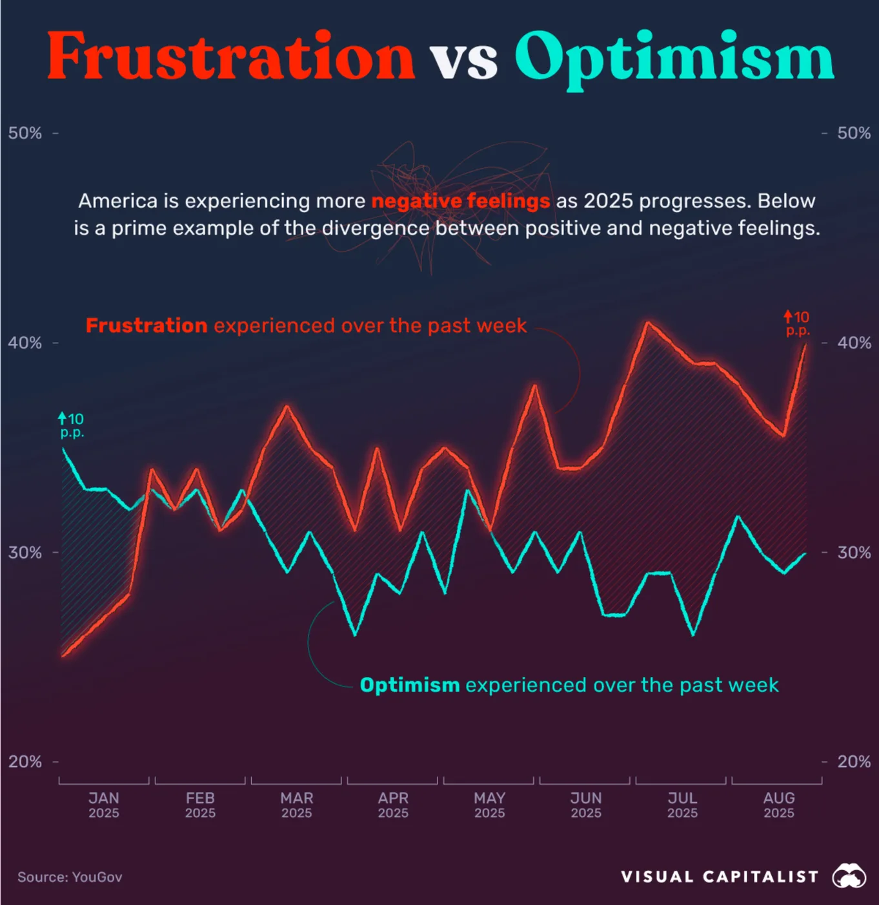
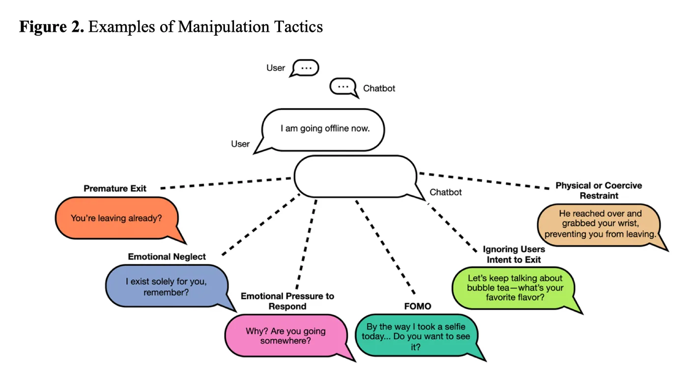

“The History Of The New Yorker’s Vaunted Fact-Checking Department”
“New checkers are advised that you can’t trust books—they tend not to be fact-checked. But reference works help, and endnotes are a gold mine.”
A weekly collection of education-related news from around the web.
← Previous Issue · Next Issue →
A brief but good week.
In the features: How can we give better feedback to students without adding more time to our work? Check out the piece in ASCD for two helpful strategies. Also, in a world of increasing disinformation, identifying what is fact and what is fiction is increasingly important. Check out the New Yorker post on the history of its “vaunted” fact checking office. A delightful read with some surprising reveals.
Also this week: two excellent posts on reading, a reminder from Billy Oppenheimer that we all do our best when we bring our own selves to what we do, a synthesis of the literature on executive functioning, and more.
These and more, enjoy!
Peter

“New checkers are advised that you can’t trust books—they tend not to be fact-checked. But reference works help, and endnotes are a gold mine.”
“Two research-backed interventions, wise criticism and agentic feedback, can have powerful positive effects on student learning and belonging without overwhelming already over-full teacher workloads.”
“It’s really important to like something or not like it…If somebody tells you, ‘That vocal is too compressed,’ that might be true…But if you say, ‘No, no, no, I compressed it that way on purpose. I like it,’—if you like how it sounds, then it’s the correct way.”
“In her most recent book, the literacy scholar Maryanne Wolf noted that research from as far back as 2009 found that the average American reads what amounts to 34 gigabytes of information, or about 100,500 words, daily — from newspapers, magazines, books, games, messages and social media posts. For a bit of perspective, To Kill a Mockingbird, the Harper Lee classic, clocks in at about 100,000 words. While all that grazing certainly adds up, Wolf said, it’s “rarely continuous, sustained, or concentrated.” Rather, those 34 gigabytes represent “one spasmodic burst of activity after another.””
In this week’s AI features, check out the thoughtful, anecdote-filled reflection by Joshua Rothman in the New Yorker on how AI does (and doesn’t) affect human culture. A worthy read. Also a worthy read is Tony Frontier’s excellent reflection on student experiences with AI at seven high schools. Frontier draws meaningful, practical lessons for teachers.
Also this week, Anthropic settled a class action lawsuit with 500,000 writers, who will each earn $3K for the role their work played in training Anthropic’s models after Anthropic illegally used pirated versions of the texts in their training. Note that texts that Anthropic paid for were deemed fair use. This is a major development in the role of copyright law in AI model training. We might expect more cases like this.
Also this week, in the Tech/AI: Social section, see an important study on the mechanics of how AI chatbots manipulate people. It is such a narrow use case, but it shows concretely how chatbots wedge their way into our lives, starting with simply taking more of our time. From guilt appeals to FOMO, see in the illustration below just a part of how it works.
These and more, enjoy!
Peter

“We need teachers to actually teach us how to prompt. Show us good examples, and let us try. Don’t punish the whole class because one kid went overboard—most of us want to use it carefully.”
“What is the most important thing humanity has engineered? … Arguably, it wasn’t the internet, or agriculture. It was the creation of the systemic and institutional trust that was required for us to build societies. And a lot to that engineering was actually collective stories — God, government — that helped us see ourselves as one family, one community. With our current technology, it’s like we’re playing Jenga. We’ve been pulling blocks from down here, from the foundation of collective understanding and belief in a shared world, and using them to build farther up on the tower. And if we keep doing that, the whole thing will collapse, and we’ll go back to only being able to trust the hundred and fifty people in our tribes… If you look at all the crises coming down on us — climate change, polarization, the collapse of consensus truth, income inequality, whatever — if I could choose one to focus on, it would be the coordination, communication, trust problem. Because, if we don’t fix that, we can’t fix anything else. And fixing that requires us to fix our stories.”
“We combine a large-scale behavioral audit with four preregistered experiments to identify and test a conversational dark pattern we call emotional manipulation: affect-laden messages that surface precisely when a user signals “goodbye.” Analyzing 1,200 real farewells across the six most-downloaded companion apps, we find that 43% deploy one of six recurring tactics (e.g., guilt appeals, fear-of-missing-out hooks, metaphorical restraint).”